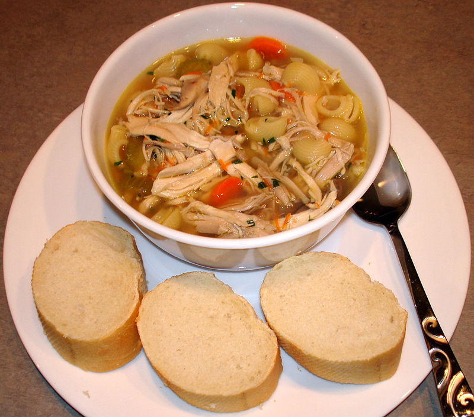

Comfort food is food that provides a nostalgic or sentimental value to someone, and may be characterized by its high caloric nature, high carbohydrate level, or simple preparation.The nostalgia may be specific to an individual, or it may apply to a specific culture.
Definition
The term comfort food has been traced back at least to 1966, when the Palm Beach Post used it in a story: "Adults, when under severe emotional stress, turn to what could be called 'comfort food'—food associated with the security of childhood, like mother's poached egg or famous chicken soup."They are believed to be a great coping mechanism for rapidly soothing negative feelings.
Psychological studies
Consuming energy-dense, high calorie, high in fat or salt, or sweet food; such as ice cream, chocolate or french fries, could trigger the reward system in human's brain, which give a distinctive pleasure or temporarily feeling better.Comfort foods may be consumed to reduce stress and feel better. Regarding the psychological aspects of food addiction that led to the unhealthy eating habits, people often use comfort food to treat themselves. Those with negative emotions tend to eat unhealthy food in an effort to experience the instant gratification which resulted in good feeling — although only short-lived.
One study divided college-students' comfort-food identifications into four categories (nostalgic foods, indulgence foods, convenience foods, and physical comfort foods) with a special emphasis on the deliberate selection of particular foods to modify mood or effect, and indications that the medical-therapeutic use of particular foods may ultimately be a matter of mood-alteration.
The identification of particular items as comfort food may be idiosyncratic, though patterns are detectable. In one study of American preferences, "males preferred warm, hearty, meal-related comfort foods (such as steak, casseroles, and soup) while females instead preferred comfort foods that were more snack related (such as chocolate and ice cream). In addition, younger people preferred more snack-related comfort foods compared to those over 55 years of age." The study also revealed strong connections between consumption of comfort foods and feelings of guilt.An article, "The Myth of Comfort Food" asserted that men tend to choose these types of savory comfort foods because they remind them of being "pampered" or spoiled, while women choose snack-related foods because they are associated with low amounts of work and less "cleanup." It also suggested that women are more likely to reach for unhealthier foods in times of stress due to more weight-conscious mindsets.
Comfort food consumption has been seen as a response to emotional stress and, consequently, as a key contributor to the epidemic of obesity in the United States.The provocation of specific hormonal responses leading selectively to increases in abdominal fat is seen as a form of self-medication.
Further studies suggest that consumption of comfort food is triggered in men by positive emotions, and by negative ones in women.The stress effect is particularly pronounced among college-aged women, with only 33% reporting healthy eating choices during times of emotional stress.For women specifically, these psychological patterns may be maladaptive.
A therapeutic use of these findings includes offering comfort foods or "happy hour" beverages to anorectic geriatric patients whose health and quality of life otherwise decreases with reduced oral intake.
By country
 A partial list by country of comfort foods around the world.
A partial list by country of comfort foods around the world.
Australia and New Zealand
Comfort foods in Australia and New Zealand may include:
- Bread and butter pudding
- Braised lamb shanks
- Butterscotch apple dumplings
- Casserole
- Chicken soup
- Golden syrup pikelets
- Honey and oat slices
- Hot chips
- Lamingtons
- Mashed potatoes
- pie
- Pea and ham soup
- Pie floater
- Porridge, topped with brown sugar or honey, yogurt, nuts, and fruit
- Potato wedges
- Pumpkin soup

- Rice custard
- Roast meat
- Roast potatoes
- Sausage and mash
- Sausage roll
- Shepherd's pie
- Spaghetti
- Steak and kidney pie
- Sticky date pudding
- Vegemite or Marmite on toast
Britain
British comfort foods include the following foods:

- Bacon butty – bacon sandwich
- Bangers and mash
- Egg and soldiers
- Cauliflower cheese
- Chicken Tikka Masala
- Cornish pasty
- Cottage or Shepherd's pie
- Custard
- Curry – India-inspired stew over rice
- Egg and chips
- Fish and chips
- Full English breakfast
- Fruit Crumble – stewed fruit with crumbly topping
- Lancashire hotpot
- Potatoes
- Jacket potato
- Mashed potatoes

- Puddings
- Bread and butter pudding
- Jam Roly-Poly – suet pudding rolled in a spiral with jam
- Rice pudding
- Spotted dick – steamed pudding with dried fruit
- Sticky toffee pudding
- Treacle pudding
- Roasted meat
- Pies
- Cheese pie, with potatoes or other savory ingredients
- Fish pie
- Pork pie
- Steak and kidney pie
- Scotch egg – hard-boiled egg baked in sausage
- Soups and stews
- Beef stew with dumpling
- Cock-a-leekie soup
- Lobscouse or lobscows – meat stew
- Potato, leek, and Stilton soup
- Stottie cake – heavy, round bread
- Toast
- Baked beans on toast
- Welsh Rarebit – hot cheese sauce on toast
- Toastie – grilled sandwich
- Toad in the hole
- Yorkshire pudding
Canada
 A plate of classic poutine at a Montreal restaurant.
A plate of classic poutine at a Montreal restaurant.
- Cake
- Cheesecake
- Chili and beans
- Chocolate bars
- Cookies
- Fish and chips
- Fried chicken
- Fried rice
- Ginger beef
- Grilled cheese sandwich
- Hamburger
- Ice cream
- Lasagna
- Nanaimo bar
- Pancakes with maple syrup

- Pea soup
- Pierogies
- Pizza
- Poutine
- Rhubarb pie
- Tourtière – meat pie with pork and lard
- Scrambled eggs on toast
France
 A madeleine. A madeleine de Proust is a French expression specifically referring to Marcel Proust's description of comfort food in In Search of Lost Time.
A madeleine. A madeleine de Proust is a French expression specifically referring to Marcel Proust's description of comfort food in In Search of Lost Time.
- Crème caramel – custard dessert
- French onion soup – onion soup with cheese and bread
- Gratin dauphinois – potato slices baked with cream
- Nutella – sweet spread of cocoa and hazelnuts
- Pate – cold meat paste
- -au-feu – beef stew
Indonesia
 Some popular Indonesian foods are considered to be comfort food, usually served hot or warm, and soupy or with a soft texture. Most of them are high in carbs or fat, such as fried rice, congee, and noodles which are high in carbs; while meatballs and grilled skewered meats contains fair amount of fat and salt. Comfort foods often are the kind of food that provides nostalgic sentiments, as they often called masakan rumahan (home cooking) or masakan ibu (mother's dishes). In Indonesia, the warm and soft texture of bubur ayam is believed to help people to recover during convalescence. Sayur sop or sup ayam is Indonesian chicken soup that often sought during flu. The warm soup contains chunk of chicken, bits of potato, carrot, and common green bean served in chicken stock.
Some popular Indonesian foods are considered to be comfort food, usually served hot or warm, and soupy or with a soft texture. Most of them are high in carbs or fat, such as fried rice, congee, and noodles which are high in carbs; while meatballs and grilled skewered meats contains fair amount of fat and salt. Comfort foods often are the kind of food that provides nostalgic sentiments, as they often called masakan rumahan (home cooking) or masakan ibu (mother's dishes). In Indonesia, the warm and soft texture of bubur ayam is believed to help people to recover during convalescence. Sayur sop or sup ayam is Indonesian chicken soup that often sought during flu. The warm soup contains chunk of chicken, bits of potato, carrot, and common green bean served in chicken stock.
Some Indonesian comfort foods are traditional Indonesian food and some are derived from Chinese influences. For some Indonesians, especially those who are abroad, comfort food might also be a certain brand or type of Indonesian instant noodle, such as Indomie Mi goreng.Indonesian comfort foods include:
- Bakmi or mie ayam
- Bakso
- Bubur ayam
- Gado-gado
- Indomie Mi goreng
- Nasi goreng
- Nasi tim – steamed chicken rice
- Sayur sop or sup ayam
- Sate
- Soto ayam
Italy

- Gnocchi – small soft dough dumplings
- Lasagne – flat noodles (pasta) layered with meat, cheese and tomato sauce
- Pizza – baked flatbread with toppings
- Nutella – sweet spread of cocoa and hazelnuts
Japan
- Chazuke/ochazuke
- Miso soup - soybean-flavored clear soup
- Mochi – rice cake
- Onigiri-rice ball
- Ramen – soup with thin noodles
- Takoyaki – octopus balls
- Tempura – battered, deep-fried pieces of meat or vegetables
- Udon – soup with thick noodles